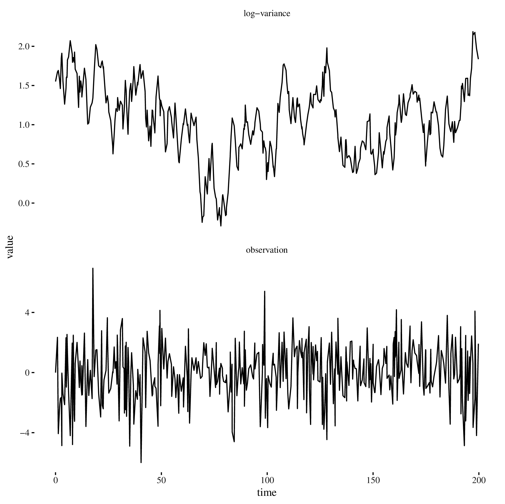
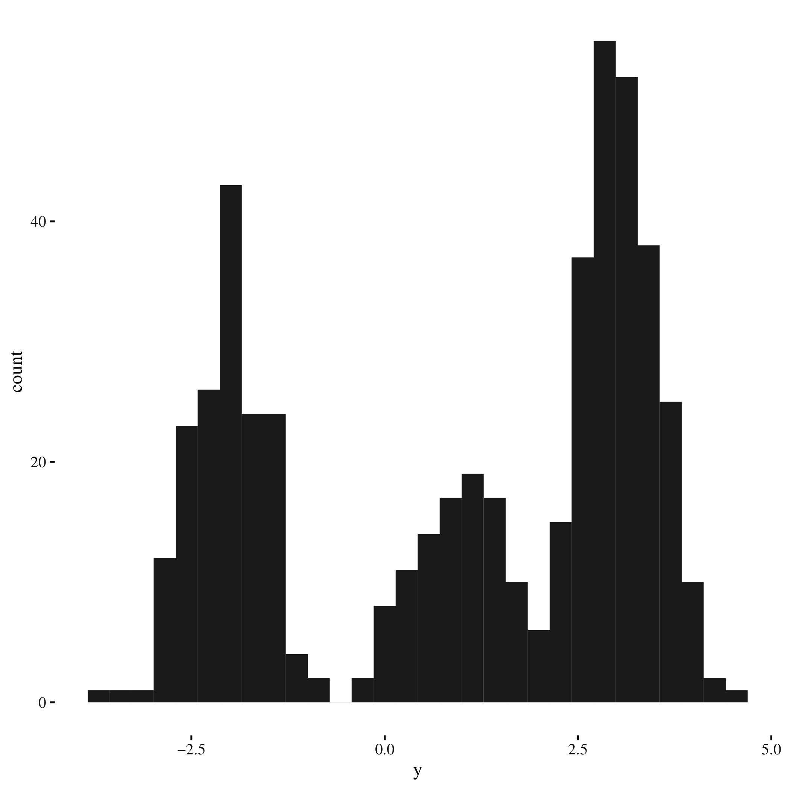
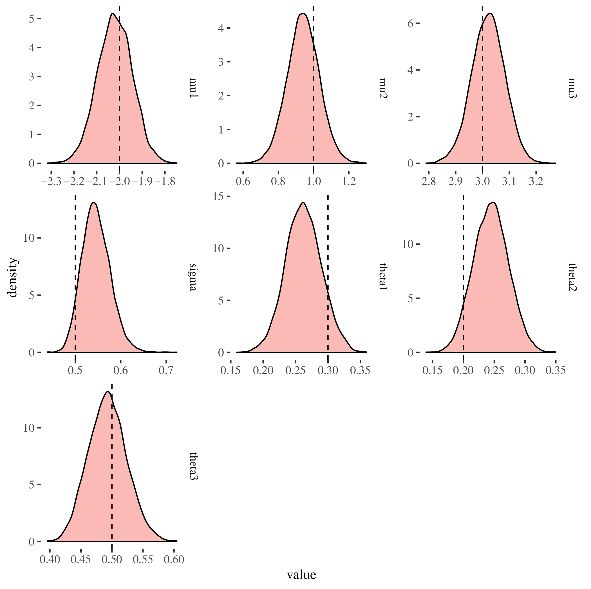

Created: 2018-12-18 Tue 08:26
\(p(H|y) = \frac{P(y|H)p(H)}{\int p(y)}\)
def mhStep[P](posterior: P => Double,
proposal: P => Dist[P]) = { p: P =>
for {
ps <- proposal(p)
a = posterior(ps) - proposal(p).logPdf(ps) -
posterior(p) + proposal(ps).logPdf(p)
u <- Dist.uniform(0, 1)
next = if (log(u) < a) ps else p
} yield next
}
Improved proposal based on Hamilton's Equations:
def step(psi: DenseVector[Double]): Rand[DenseVector[Double]] = {
for {
phi <- priorPhi
(propPsi, propPhi) = leapfrogs(eps, gradient, l, psi, phi)
a = logAcceptance(propPsi, propPhi, psi, phi, ll, priorPhi)
u <- Uniform(0, 1)
next = if (log(u) < a) {
propPsi
} else {
psi
}
} yield next
}
def leapfrog(
eps: Double,
gradient: DenseVector[Double] => DenseVector[Double])(
psi: DenseVector[Double],
phi: DenseVector[Double]) = {
val p1 = phi + eps * 0.5 * gradient(psi)
val t1 = psi + eps * p1
val p2 = p1 + eps * 0.5 * gradient(t1)
(t1, p2)
}
def leapfrogs(
eps: Double,
gradient: DenseVector[Double] => DenseVector[Double],
l: Int,
psi: DenseVector[Double],
phi: DenseVector[Double]) = {
if (l == 0) {
(theta, phi)
} else {
val (t, p) = leapfrog(eps, gradient, theta, phi)
leapfrogs(eps, gradient, l-1, t, p)
}
}
val xs = Array(1,2,3,4,5)
var i = 0
while (i < xs.size) {
xs(i) = xs(i) + 1
i += 1
}
xs
xs: Array[Int] = Array(1, 2, 3, 4, 5)
i: Int = 0
res16: Array[Int] = Array(2, 3, 4, 5, 6)
xs map (_ + 1)
res18: Array[Int] = Array(3, 4, 5, 6, 7)
def map[A, B](fa: List[A])(f: A => B): List[B]
xs.foldLeft(0)(_ + _)
res20: Int = 20
def foldLeft[A, B](fa: List[A])(z: B)(f: (B, A) => B): B
xs flatMap (x => List(x, x + 1, x + 2))
res22: Array[Int] = Array(2, 3, 4, 3, 4, 5, 4, 5, 6, 5, 6, 7, 6, 7, 8)
def flatMap[A, B](fa: List[A])(f: A => List[B]): List[B])
def sum[A: Numeric](xs: List[A]): A =
xs.foldLeft(_ + _)
trait Numeric[A] {
def compare(x: T, y: T): Int
def fromInt(x: Int): T
def minus(x: T, y: T): T
def negate(x: T): T
def plus(x: T, y: T): T
def times(x: T, y: T): T
def toDouble(x: T): Double
def toFloat(x: T): Float
def toInt(x: T): Int
def toLong(x: T): Long
}
implicit def numericInt = new Numeric[Int] { ... }
Figure 1: Commutative diagram for the second natural transformation
Hask, every functor is hence
an endofunctor, \(F: \texttt{Hask} \rightarrow \texttt{Hask}\)Rand[A] representing a distribution over the type AflatMap represents a joint or marginal distributiondef coinFlip(n: Int): Rand[Int] = Beta(3, 3).flatMap(p => Binomial(n, p))
flatMap and
mapdef coinFlip(n: Int): Rand[Int] = for {
p <- Beta(3, 3)
} yield Binomial(n, p)
To perform forward mode AD specify the dual number to \(x = 5\), \(x^\prime = 5 + \varepsilon\) then calculate \(f(x^\prime)\):
case class Dual(real: Double, eps: Double)
Numeric[Dual] typeclassdef plus(x: Dual, y: Dual) =
Dual(x.real + y.real, x.eps + y.eps)
def minus(x: Dual, y: Dual): Dual =
Dual(y.real - x.real, y.eps - x.eps)
def times(x: Dual, y: Dual) =
Dual(x.real * y.real, x.eps * y.real + y.eps * x.real)
def div(x: Dual, y: Dual) =
Dual(x.real / y.real,
(x.eps * y.real - x.real * y.eps) / (y.real * y.real))
def logPos(ys: Vector[Double])(mu: Dual) =
(-0.5 * 0.125 * mu * mu) - 0.125 * ys.
map(_ - mu).
map(x => x * x).
reduce(_ + _)
case class DualV(real: Double, dual: Vector[Double])
dual argument can be confused between variables, each variable in a
computation must have the same dimension dualval model = for {
b0 <- Normal(0.0, 5.0).param
b1 <- Normal(0.0, 5.0).param
b2 <- Normal(0.0, 5.0).param
sigma <- Gamma(2.0, 2.0).param
_ <- Predictor.fromDoubleVector { xs =>
{
val mean = b0 + b1 * xs.head + b2 * xs(1)
Normal(mean, sigma)
}
}
.fit(x zip y)
} yield Map("b0" -> b0, "b1" -> b1, "b2" -> b2, "sigma" -> sigma)
model.sample(EHMC(10), 5000, 10000 * 20, 20)
Figure 2: Diagnostic plots for simulated data from the linear regression model

Figure 3: Simulation from a stochastic volatility model with Ornstein-Uhlenbeck latent-state
val prior = for {
phi1 <- Beta(5.0, 2.0).param
phi = 2 * phi1 - 1
mu <- Normal(0.0, 2.0).param
sigma <- LogNormal(2.0, 2.0).param
x0 <- Normal(mu, sigma * sigma / (1 - phi * phi)).param
t0 = 0.0
} yield (t0, phi, mu, sigma, x0)
def ouStep(phi: Real, mu: Real, sigma: Real, x0: Real, dt: Double) = {
val mean = mu + (-1.0 * phi * dt).exp * (x0 - mu)
val variance = sigma.pow(2) * (1 - (-2 * phi * dt).exp) / (2*phi)
Normal(mean, variance.pow(0.5))
}
def step(st: RandomVariable[(Double, Real, Real, Real, Real)],
y: (Double, Double)) = for {
(t, phi, mu, sigma, x0) <- st
dt = y._1 - t
x1 <- ouStep(phi, mu, sigma, x0, dt).param
_ <- Normal(0.0, (x1 * 0.5).exp).fit(y._2)
} yield (t + dt, phi, mu, sigma, x1)
val fullModel = ys.foldLeft(prior)(step)

Figure 4: 500 Simulations from a mixture model with \(\theta = \{0.3, 0.2, 0.5\}\) and \(\mu = \{-2.0, 1.0, 3.0\}\), \(\sigma = 0.5\)
val model = for {
theta1 <- Beta(2.0, 5.0).param
theta2 <- Beta(2.0, 5.0).param
alphas = Seq(theta1.log, theta2.log, Real.zero)
thetas = softmax(alphas)
mu1 <- Normal(0.0, 5.0).param
mu2 <- Normal(0.0, 5.0).param
mu3 <- Normal(0.0, 5.0).param
mus = Seq(mu1, mu2, mu3)
sigma <- Gamma(2.0, 10.0).param
components: Map[Continuous, Real] = mus.zip(thetas).map {
case (m: Real, t: Real) => (Normal(m, sigma) -> t) }.toMap
_ <- Mixture(components).fit(ys)
} yield Map("theta1" -> thetas.head, "theta2" -> thetas(1),
"theta3" -> thetas(2),
"mu1" -> mu1, "mu2" -> mu2, "mu3" -> mu3, "sigma" -> sigma)

Figure 5: Posterior Densities for the parameters in the mixture model